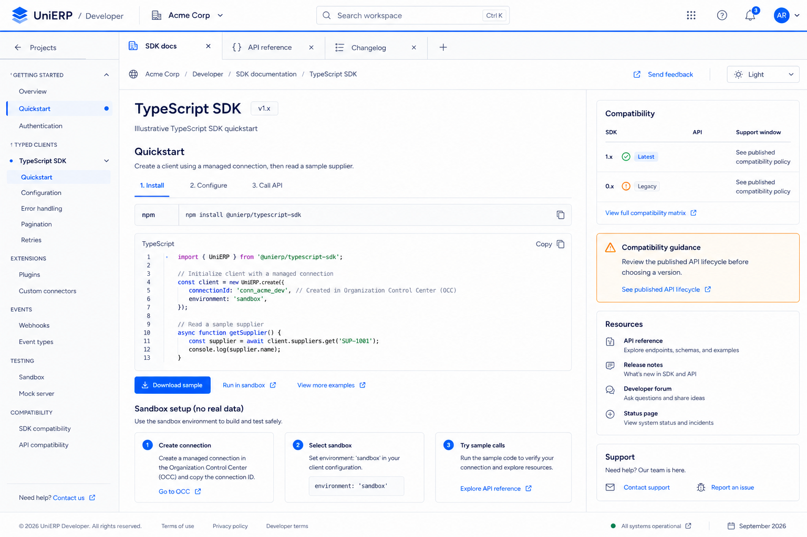
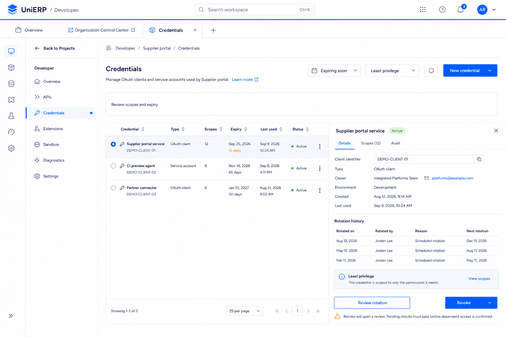
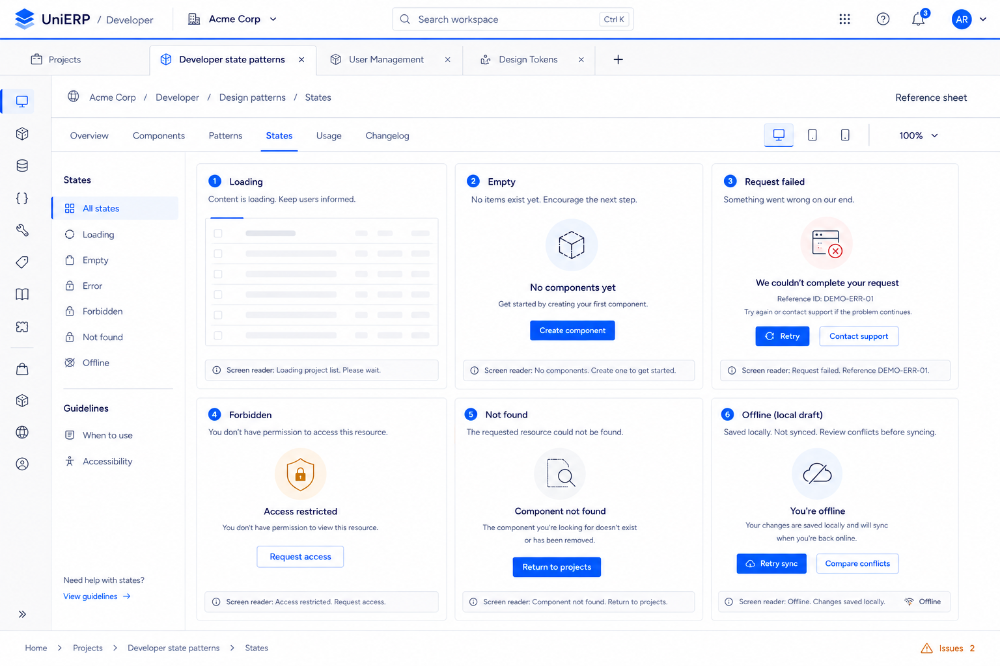

65 · SDK documentation and quickstartDeveloper & states · Open image for full resolution
66 · Application credentials inventoryDeveloper & states · Open image for full resolution
74 · Loading empty error and access statesDeveloper & states · Open image for full resolution